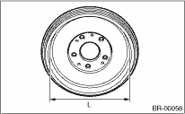

BRAKE > Rear Drum Brake Drum
1. If the inside surface of the brake drum has scratches, perform inspection. And, if it is unevenly worn, has narrow streaks on the surface, or the outside surface of brake drum is damaged, correct or replace it.
2. Measure the brake drum inner diameter. If it exceeds service limits, replace with a new brake drum.
Drum inner diameter L:
Standard:
228.6 mm (9 in)
Service limit:
230.6 mm (9.08 in)
